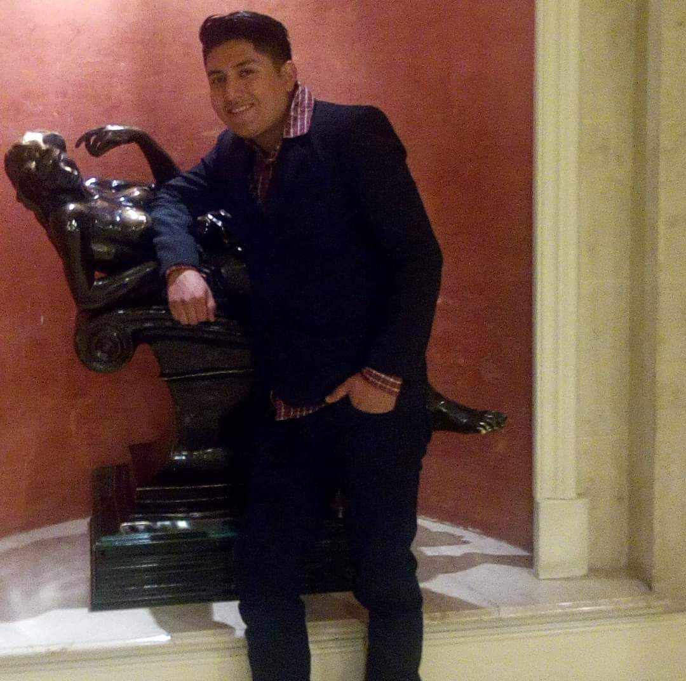

Educación:
Con una base educativa sólida, Edvin es Perito Contador graduado del Colegio Zamaneb. Su búsqueda constante de conocimiento lo ha llevado a especializarse en RPA, Power BI y SQL, y actualmente está inmerso en el fascinante mundo de la programación mientras estudia la Licenciatura y Tecnología en Administración de Empresas.